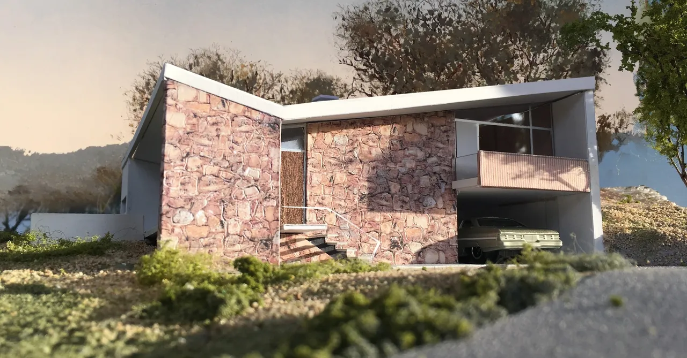
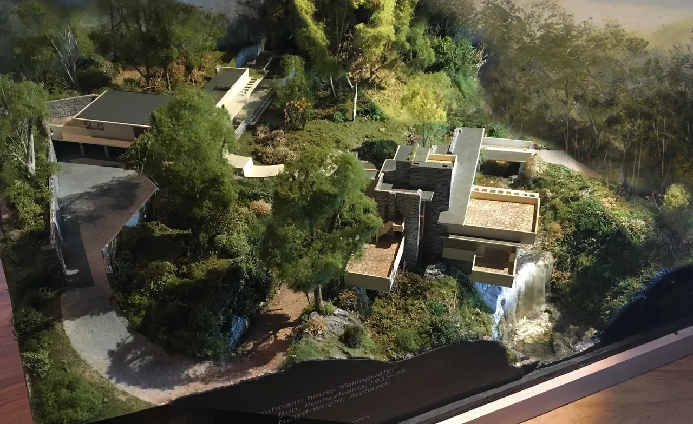
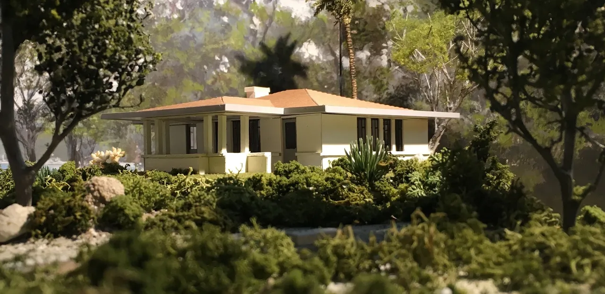
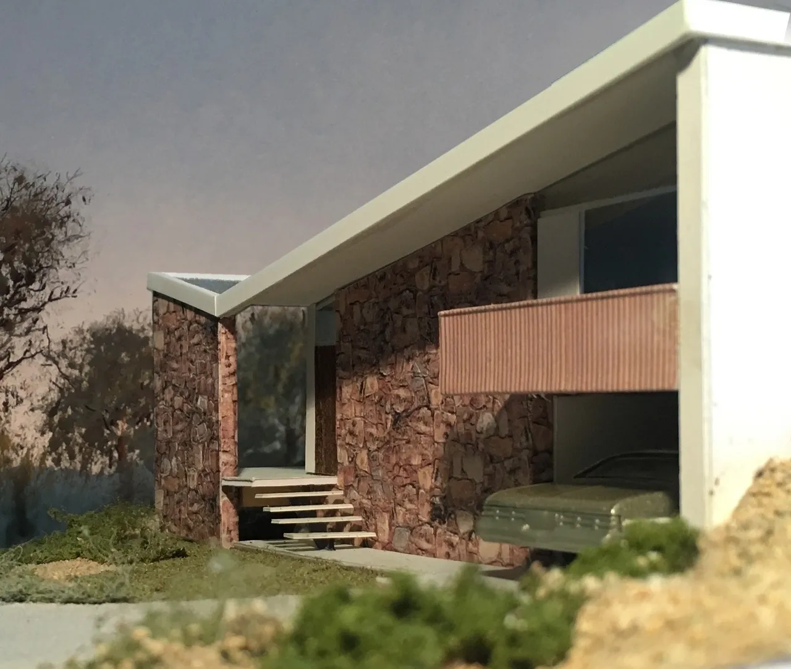
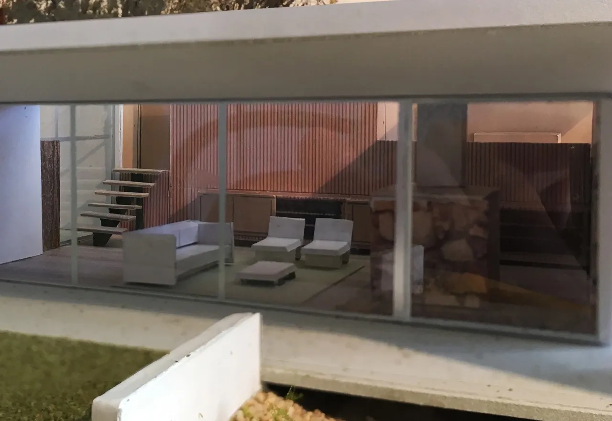
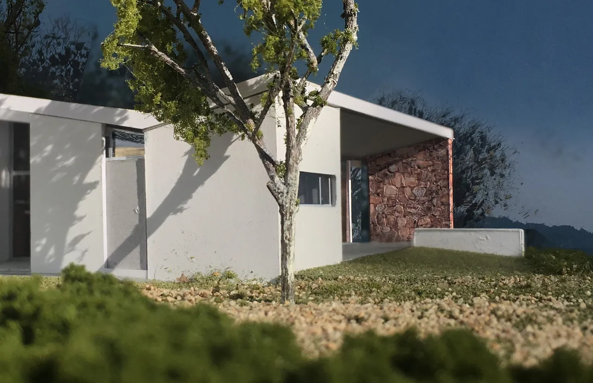
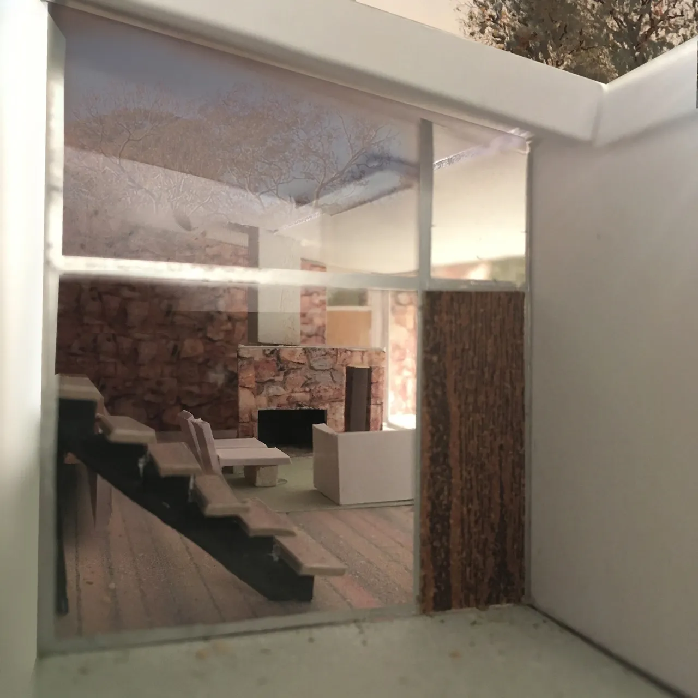
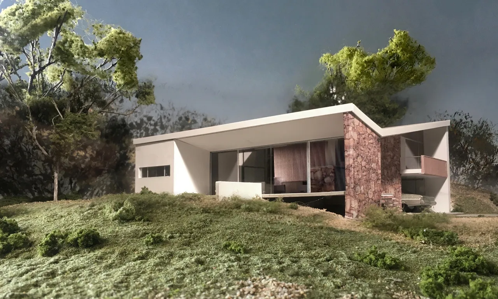

David Webb: Model Architecture
5 March 2025
Just as the COVID19 pandemic was creating upheaval and uncertainty with regards to border closures and travel restrictions, Canberra Modern was lucky enough to spend sometime at Joe's Bar with fellow mid-century modern design fan, architectural model maker and member of the Palm Springs Modernism Week committee, David Webb. Over a few drinks we asked him about his fascinating work and what he has learnt from a lifetime passion for mid-century modern architecture.

Bowden House by Harry Seidler
CM: Many mid-century modern fans would be envious of the fact that you live in Palm Springs part of the time and in Australia part of the time. Tell us a bit about your background and your work in Palm Springs.
After many years living in Australia, in 2009 I moved back to Los Angeles. I was working on a model of [Richard] Neutra's Kaufmann desert house and went out to Palm Springs to see the completed restoration. While I was out there I found a condominium for sale in Canyon View Estates designed by Palmer & Krisel in 1963. It was in need of repair and I was able to afford it.
My new neighbors were involved in Modernism Week. I had attended lectures on previous visits to Palm Springs and they introduced me to the organiser, Mark Davis. He asked me if I'd like to become involved. For the past eight years I have facilitated and introduced the lectures. During that time I have fallen deeper and deeper in to the rabbit hole that is architecture, design and preservation!
CM: What do you like about mid-century modern design in general and who are the architects that inspire you?
When I was about twelve, I came across the famous photograph of [Frank Lloyd Wright's] Fallingwater. I think it was in a 'Life' magazine. That was the start of a lifelong interest in architecture. I have visited the house many times and when I was in my early thirties I built a crude model of it.

Model of Fallingwater
Arguably, I think Wright's DNA can be found in the work of the best architects of the twentieth century. I think it is the scale and, most importantly, the connection to the landscape. I had the opportunity to visit several houses designed by lesser known Wright apprentices a few years back. I've also spent time in several Neutra houses. The overwhelming feeling when you walk through the door of these houses is that you are 'home'.
My interest in Wright led me to Walter Burley Griffin and Marion Mahony. When I was living in Sydney I went to look at a house in Castlecrag that I was told had been the original display home. There was a plan to restore it and build a second residence on the lot. The architect chosen for this task was Bruce Rickard. Before work commenced they staged a small exhibition of his work. His early houses were very 'Wrightian' but I particularly liked a small house he had designed for himself and his family in Cottage Point [NSW].

Griffin Cottage Model
CM: Speaking of well-known Australian architect Bruce Rickard, you commissioned him to design a house for you — what was about his work that appealed to you?
I purchased a five-acre lot in Kangaroo Valley, NSW about a year later and, despite my small budget, I bravely contacted Bruce to see if he could design a house for me. That was the start of a friendship that was to last for the rest of his life. The completed house was beautiful but it was the two years of planning, talking, building models and just spending time with this wonderful architect that will forever remain a high point in my life.
CM: How did your interest in the work of Walter Burley Griffin and the 'un-built' workers cottages come about?
There were elements of the Walter Burley Griffin worker's cottage that are reminiscent of the original section of the Hotel Canberra. I had read that John Smith Murdoch was a big supporter of Griffin. The cottage also has a floor plan that seems very ahead of its time. The layout being similar to the 'Twin Palms' tract houses of the 1950's in Palm Springs.
CM: So, we're sitting here in one of the most recent architectural developments in Canberra, what do you think about the design and architecture of the city?
The way the city is connected to the beautiful surrounding landscape makes it feel like the built environment is a pleasant addition rather than an ugly intrusion. Even though, I believe, there were many deviations from the Mahony-Griffin plan, the genius of their spirit shines through. I'd like to think the many architects who subsequently contributed to Canberra in the post war period, were inspired by this.
CM: Tell us about your model making. There seem to be a few model-making kits on the market, for famous buildings such as the Farnsworth House. But you make originals, don't you?
I eventually built a model of Fallingwater from the plans, photos and elevations in Edgar Kaufmann Jnr's book. It has been a work in progress ever since. Earlier this year I acquired details of the staff quarters/garages which added six inches to the original model. After 30 years its finally finished!
CM: Can you describe the process you go through to make a scale model?
I have been fortunate to have access to archives that have enabled me to create my models. With a floor plan and elevations it's fairly straightforward. Scale is determined by the size of the house. The larger the house, the smaller the scale. There were enough photographs and information online for me to create my model of the Bowden house.
CM: Danish architect Jørn Utzon's timber models, such as famous one used to demonstrate the sail design, of the Sydney Opera House are in the collection of the Museum of Applied Arts and Sciences. What do you think you learn about architecture from making scale models?
For many years I made models to satisfy my own curiosity. It gave me a glimpse in to the creative processes of some of the greatest architects.
CM: What made you chose Harry Seidler's Bowden House to make a model of?
Apart from the Rose Seidler House, I wasn't familiar with Mr Seidler's residential projects. As built, [the] Bowden [House] has the purity of some of his fellow countryman, Richard Neutra's small houses. The slightly Wrightian stone walls anchoring the western elevation and that brilliant split level floor-plan that allows the house to cling to the hillside.





CM: Your models have been on display in exhibitions. What can the public appreciate about the work of architects though looking at models such as these?
In 2013 I was invited to create models for the inaugural exhibition at the Palm Springs Architecture and Design Museum. It was to celebrate the work of [American architect] E. Stewart Williams. I had already built a model of his 1954 Edris House which is possibly the best MCM house in Palm Springs. From that I began to receive commissions for mainly significant mid century residences. Last year, however, I did a model of a planned development in Rancho Mirage designed by Sean Lockyer.
I use my experience as a painter and scenic artist to try and capture the essence of a building much like a three-dimensional painting. I think that makes my models somewhat more accessible to the general public than a traditional architectural model.
CM: Well, cheers, David, thanks so much for sharing your insights on what inspires you about mid-century architecture.